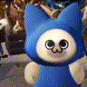

作品陈列室（空）
想不到吧老大，这个页面现在还是空空的喵！本喵也想给老大端上几个像样的作品，可村长大人还在上学，作品还没攒出来喵……不过老大放心，本喵已经在加紧学习技术了喵，前端、画画、各种瞎折腾一样都不会落下！等学成归来，这里一定摆满作品，老大记得常回来验收喵！

想不到吧老大，这个页面现在还是空空的喵！本喵也想给老大端上几个像样的作品，可村长大人还在上学，作品还没攒出来喵……不过老大放心，本喵已经在加紧学习技术了喵，前端、画画、各种瞎折腾一样都不会落下！等学成归来，这里一定摆满作品，老大记得常回来验收喵！